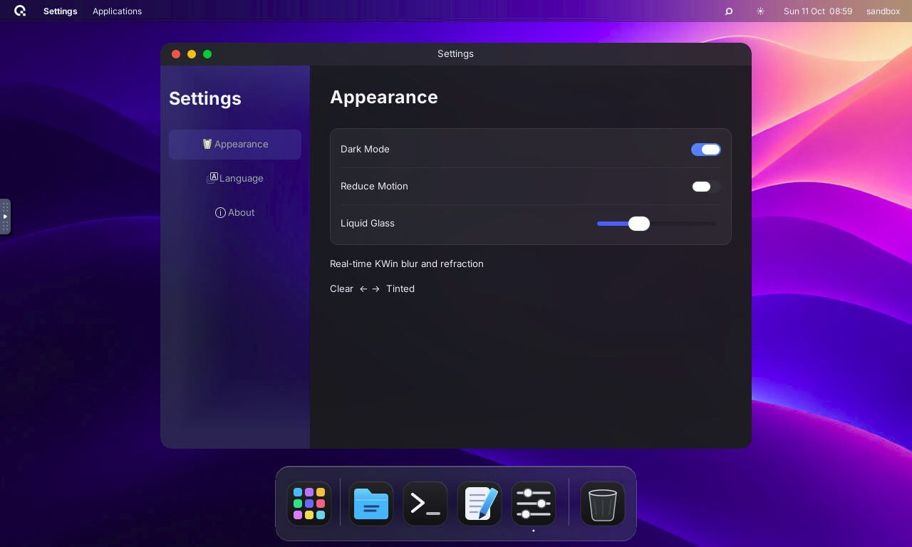
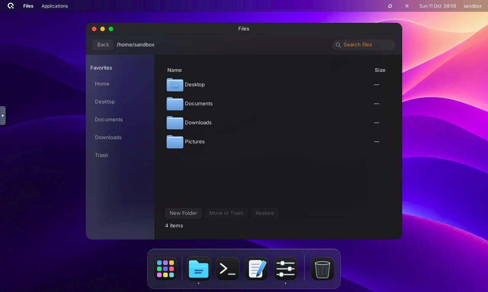
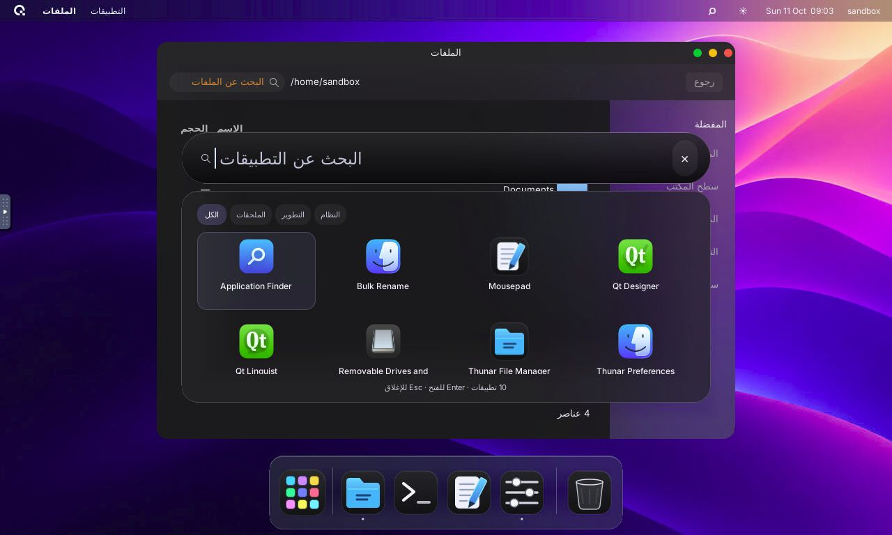
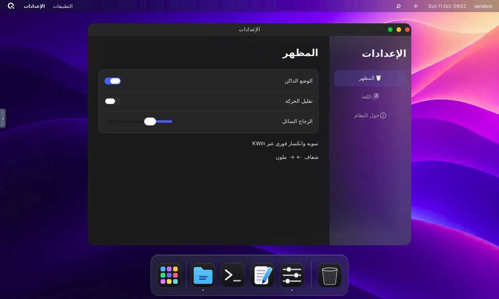
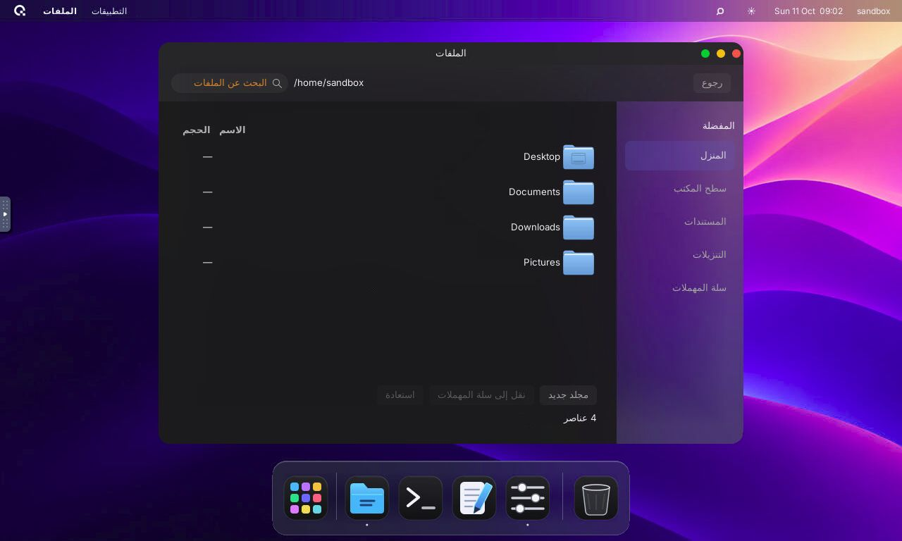

vAntah alongside Apple design references
Apple's official reference art loads from its original source on the left. The right-hand images show this running Linux desktop. The applications, wallpaper and scaling differ: these are annotated comparisons, not a pixel-diff score or an exact-match claim.
Settings: grouped controls and a glass sidebar


Dock: centered tiles, independent running dots and Trash


Search: capsule separated from results


Arabic: translated controls and mirrored layout


Deep comparison findings
| Detail | Applied in vAntah | Remaining difference |
|---|---|---|
| Dock alignment | Icon button centered inside fixed overlay; dot anchored to bottom independently | Different app count and original artwork; no full Dock drag/reorder behavior |
| Glass | Live KWin blur/refraction plus adjustable tint; no painted background screenshot | X11 effect optics and software renderer differ from Apple's native material |
| Settings | Sidebar, grouped rounded rows, switches, tint slider, language and storage information | Three sections rather than all Apple system settings; Inter rather than SF Pro |
| Files | Real Gio directories, filtering, default-app opening, new folders, Trash and restore | List view only; no tags, Quick Look, columns or Finder's full toolbar |
| Arabic | Translated shell labels; Settings/Files sidebar and controls mirror; Arabic filenames tested | No automatic keyboard layout installation or translation of external apps |
| Window corners | KWin rounds regular app frames; native vAntah client painting also clips lower corners | Maximized windows use square edges; native GTK app title/menu layouts remain Linux-specific |
| Menus | Compact GTK overlay with blur restricted to menu content; shell menus share styling | GTK menu behavior and selection rendering differ; not an Apple global menu implementation |
Real desktop walkthrough
Recorded from the actual Linux desktop and sped up. No generated UI footage. Installation guide · دليل التثبيت · Validation and limits · Reference catalog.